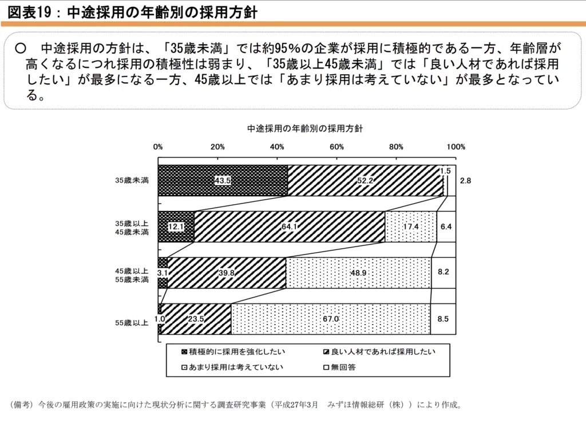

中高年の転職は難しくない！再就職を成功させるコツを元人事担当者が解説
こんな人におすすめ
- 中高年で新しい仕事にチャレンジしたい
- 中高年で転職できるか不安
- 中高年で転職を成功させるコツを知りたい
一般的に「中高年の転職は難しい」と言われています。確かに年齢的なハンデがあるため難易度は上がる傾向です。
しかし、中高年でも転職に成功している人は多くいます。中高年の転職は、ポイントをおさえた活動が成功の秘訣です。
 まつお
まつお実際に筆者も40代で転職を成功させました。
また、人事担当として中高年を採用した経験もふまえて「中高年が転職を成功させるコツ」を解説します。
この記事でわかること
- 中高年の転職が難しい現状
- 中高年の転職が難しいと言われる理由
- 中高年が転職を成功させるコツ
中高年の転職が難しい現状
「中高年の転職は難しいのではないか？」とのイメージを持っている人は多くいます。
では、実際に中高年の転職事情はどのような状況なのでしょうか。データをもとに解説していきます。
- 中高年で転職する人は増えている
- 中高年の転職理由は労働条件への不満がほとんど
- 中高年の転職は時間がかかるが可能
中高年で転職する人は増えている
総務省の「労働力調査」によると40代〜50代の転職は増加傾向にあり、転職者全体の約18％は45歳～54歳の転職者が占めています。
つまり、転職市場における中高年の割合は思ったよりも多いのです。
一方で、ほかの年代に比べるとまだまだ就職率は低くなっています。
厚生労働省の「雇用動向調査結果の概況」を見てみましょう。
| 年齢 | 男性 | 女性 |
| 20歳〜24歳 | 38.0% | 37.3% |
| 30歳〜34歳 | 11.0% | 14.7% |
| 50歳〜54歳 | 5.0% | 10.9% |
| 55歳〜59歳 | 5.1% | 10.0% |
50代以降になると受け入れてくれる企業が少ないことや、内定を獲得しにくい傾向です。
そのため、若年層よりも転職へのハードルが高くなっているのがわかります。
中高年の転職理由は労働条件への不満がほとんど
中高年は再就職が大変だとわかっていても、なぜ仕事をやめてしまうのでしょうか。
中高年の転職理由を見てみましょう。
【中高年の転職理由TOP3】
- 自己都合（72.1％）
- 倒産・整理解雇・人員整理による勧奨退職（7.8％）
- 契約期間の満了（6.0％）
【自己都合の具体的な理由TOP6】
- 労働条件(賃金以外)がよくなかったから（27.4％）
- 満足のいく仕事内容でなかったから（23.8％）
- 人間関係がうまくいかなかったから（23.8％）
- 賃金が低かったから（21.3％）
- 会社の将来に不安を感じたから（19.7％）
- 能力・実績が正当に評価されないから（15.9％）
引用元：マイナビミドルシニア
中高年の退職理由は「労働条件(賃金以外)がよくなかったから」がトップにランクされていることが特徴です。
この背景には親の介護などが必要になり、働く時間や日数を調整しなければならなくなったことも関係しています。
実際に55歳〜59歳で「介護・看護」を理由に退職する人は、離職者全体の9.27%と最も多いのです。
介護に関して会社側のサポートが少ないことや、制度が整備されておらず退職を余儀なくされるケースも少なくありません。
また、「定年を見据えた働き方」を考える中で、ストレスを感じながら働くことに見切りをつけ「最後は快適な職場で働きたい」と考える人も多いのでしょう。
まつお人間関係への不満を理由に転職する人の割合が、若年層よりも高い特徴があります。
時間はかかるが中高年の転職は可能

厚生労働省職業安定局がおこなった「中途採用に係る現状等についての調査」によれば、ほとんどの企業では中高年の採用に消極的です。
35歳未満は約43.5%の企業が採用に積極的ですが、45歳〜55歳の採用を考えている企業は3.1%にまで下がります。
つまり、ほとんどの企業が「中高年の採用は考えていない」のが現状です。
中高年の転職は正社員以外の選択肢も視野に入れましょう。
一般的に、中高年は以下のようなプライドがある場合も少なくありません。
- これまでの年収を下げたくない
- 契約社員や派遣社員は嫌だ
- 大企業で働きたい
上記のようなこだわりを捨てれば、時間はかかりますが決まりやすくなります。
中高年の転職が難しいと言われる理由5選
厚生労働省のデータを見ると中高年の再就職は難しいと感じるでしょう。
しかし、時間はかかるものの、年々中高年の転職は増つつあります。
それでも、難しいと言われるのはなぜでしょうか。
- 中高年向けの求人が少ない
- スキルや経験が求められる求人が多い
- 人件費が高い
- 定年が近い
- 体力や健康面での不安
ひとつずつ、詳しく見ていきましょう。
中高年向けの求人が少ない
厚生労働省職業安定局の「中途採用に係る現状等についての調査」を見ると、企業は中高年の採用に積極的とは言えません。
中高年が、これまでのスキルを活かして働ける求人となると、かなり限られています。
長い間、別の会社で経験を積んできたことで人格が完成されていて、プライドが高い人も少なくありません。
たとえば、前職と同じ給料やポジションを求めるなど、自らのプライドが採用のハードルをあげてしまっているケースもあるのです。
さらに、若い世代と比較すると、中高年は人件費が高くなりがちなので、積極的に採用したい企業は少なくなります。
まつお自分では感じていなくても、企業側からはこのように思われていることが多いです。
スキルや経験が求められる求人が多い
中高年は経験が豊富なので、知識だけではなく即戦力の人材が求められます。企業側が中高年に期待するのは今までの経験やスキル、人脈です。
経験が豊富だと、転職サイトなどから部門責任者などへのオファーがあることも少なくありません。
たとえば、大手メーカーに勤務していた人が中小企業メーカーに転職し、拠点の責任者としてオファーを受けるなどがあります。
また、若手や人材の育成や、専門知識や技術を生かした課題解決など、即戦力として採用されることがほとんどです。
自分は何が求められていて「それに応えるスキルがあるか」をしっかり見極めて転職活動しなければなりません。
人件費が高い
中高年はスキルだけでなく管理職などの経験を持つ人も少なくありません。
そのような人材を採用するとなると20代30代などの転職者よりも、人件費が高くなることも採用を懸念する理由です。
一般的に、中高年よりも若い世代の将来性に人件費を使いたいと思う企業が多く、中高年の採用に積極的な企業はほとんどありません。
企業にとって人件費は大きなコストとなるため、少しでも下げるために30代のほうがニーズが高いのです。
ただし、高い人件費を払ってでも「どうしてもあなたが欲しい」と思われれば採用されます。
まつお特別なスキルや経験があれば有利です。
定年が近い
中高年は、しばらくすると定年退職を迎えます。
たとえ良い人材であっても「長く働いてくれる若い人材を採用したい」と考えている企業がほとんどです。
長く働いてスキルや能力を発揮してもらいたい一方で、長くても定年まで10年程度となってしまいます。
そうなると、定年後に新たな人材を確保しなければならず、採用コストがかかるのです。
このような理由から、転職ニーズが少なくなります。
体力や健康面での不安
「若い頃であれば多少無理ができたけど、今は無理がきかなくなった」という人もいるでしょう。
若い人と比べて「記憶力」や「体力面」で老いを感じる時期です。
実際に、体調面に不安があって仕事量を減らすことを希望する人も少なくありません。
そのため、年齢と体力に見合った求人を探すことも、中高年の転職活動を成功させる上で重要な要素です。
自分を過信して肉体労働系の仕事についてしまうと、体を壊してしまうことにもなりかねないので、体力面を考慮して転職先を探しましょう。
人によって個人差はありますが、やはり年齢による体力面の差は出てきます。
難しくない！中高年が転職に成功するコツ7選
中高年が転職を成功させるのは決して不可能ではありません。
経験の豊富さや社会人としての成熟度など中高年にしかないものもあるのです。
転職活動に成功する7つのコツを解説するので、参考にしてみてください。
- 企業への貢献度をアピールする
- 企業が求めるニーズを把握する
- 給料にこだわりすぎない
- 正社員以外も視野に入れる
- 転職エージェントを使う
- 未経験でも恐れずチャレンジする
- 人脈を活用して紹介を受ける
コツをおさえて活動すれば中高年でも転職は必ず成功します。
1. 企業への貢献度をアピールする
たしかに若い人のほうが転職に有利なのは間違いありませんが「中高年だからこそ採用したい」と考える企業も少なくありません。
中高年は多くのスキルを持っており、経験豊富なのでノウハウが少ない企業などでは、キャリアビジョンの実現のため採用されやすいことがあります。
とくに中小企業やベンチャー企業では、中高年のノウハウを求めている企業も多く、柔軟な働き方ができる可能性があります。
たとえば、以下のようなスキルは中高年ならではのものです。
- これまで培ったノウハウやスキル
- 業界の専門知識
- マネジメントスキル
- 人脈
また、中高年には、人生経験やこれまでの経験を活かして若手の育成を望んでいるケースもあります。
「中高年だから」とあきらめず「中高年だからこそ提供できる価値」をしっかりとアピールすることが重要です。
2. 企業が求めるニーズを把握する
新卒採用は「ポテンシャル採用」なので、スキルはさほど関係ありません。
しかし、転職は実績やスキルが重視されるため、企業が「どのようなスキルを持った人材を求めているのか」を理解することが大切です。
たとえば、企業がマネジメントスキルのある人材を求めているのに、自分に管理職経験がないとマッチングしません。
企業の求めるニーズを把握して、しっかりアピールしましょう。
このように「企業が求める人材かどうか」が、もっとも重視されるポイントです。
そのためにも、これまでに学んできた経験や、積み上げてきた実績を整理してみましょう。
3. 給料にこだわりすぎない
中高年の転職希望者は、前職と同じかそれよりも高い給与を希望する人が多い傾向があります。
これまで積み重ねたキャリアやスキルがあるため、転職先でも通用すると思い込んでしまっているからです。
しかし、現実はそう甘くありません。
多くの場合、年収ダウンは避けられないのです。
転職で年収アップできるのは、特別なスキルや実績を持っている一部だということは頭に入れておきましょう。
収入にこだわり過ぎると選択肢が狭くなり、転職先を見つけるのが難しくなります。
実績を重ねることで年収アップしていくケースも多いため、目先の給料だけで判断することはおすすめしません。
まつおどれくらいまでなら、年収が下がっても大丈夫なのか把握しておきましょう。
4. 正社員以外も視野に入れる
「パートや派遣社員は、不安定だから選択肢には入っていない」という人も少なくありません。
しかし、これまで解説してきたように中高年の正社員求人は少ないので、選択肢を広げなければ見つかる可能性が低くなります。
そのため、正社員以外の求人にも目を向けましょう。
「非正規社員はイメージが悪い」と思うかもしれません。
しかし、とりあえず非正規雇用で働きながら正社員への転職活動を続けるのも、ひとつの手段です。
資金面で生活に余裕がないのであれば、正社員にこだわらないほうがよいでしょう。
まず、生活のための収入を確保すべきです。
派遣として働くメリットについては、関連記事「【どっちがいい？】正社員と派遣社員の違いやメリット・デメリット」で詳しく紹介していますので、参考にしてみてください。

5. 転職エージェントを使う
転職活動は自分だけで活動するより、誰かにアドバイスをもらったほうがスムーズです。
転職エージェントを使えば、希望条件を担当者に伝えれば求人を探してくれるだけでなく、応募書類の添削や面接対策もしてくれます。
業界の動向や企業の内部事情にも精通したキャリアアドバイザーが、的確なアドバイスをしてくれるので採用の確率が高まるでしょう。
また、自分では入手できない情報も得られるため、登録しておいて損はありません。
ただし、転職エージェントを選ぶときは、中高年向けを使うようにしましょう。
まつお中高年向け転職サイトは中高年の採用を想定しているので、年代でのミスマッチが起こらず、内定率も高いことが特徴です。
中高年に強い転職エージェントを紹介するので、まだの人は登録をおすすめします。
| 転職サイト名 | 特徴 | 求人数 |
| マイナビミドルシニア | 40代・50代・60代のミドルシニア専門 正社員以外の求人も豊富 | 約180,000件 |
| enミドルの転職 | 30代〜50代のハイクラス求人が多数 大手求人も多め | 約180,000件 |
| OKジョブシニア | 40代・50代・60代に特化 多様な雇用形態の求人が豊富 | 約8,000件 |
6. 未経験でも恐れずチャレンジする
書類選考に通過しないことや、面接で不採用になるのはよくあることです。
そのため、中高年の転職活動はなかなか仕事が決まらず、長期戦になるケースも少なくありません。
しかし、その度に毎回怖がっていては前に進めないのです。
失敗を恐れてネガティブになることや、なぜ不採用になったのかを考えすぎると余計に失敗する可能性があります。
たとえ不合格でも、ポジティブ思考で粘り強く前向きな転職活動を進めるのがポイントです。
不採用になることを前提に考え「受かればラッキー」くらいの気持ちを持ちましょう。
7. 人脈を活用して紹介を受ける
これまでのキャリアを通じて人脈が豊富な人もいるいでしょう。
そのような人は、人脈を生かした「紹介による転職」の方法もあります。
たとえば、公には求人募集をしていなくても、紹介によって入社できるなど、人脈が強い味方になることも少なくありません。
思い切って、前職で付き合いのあった企業や知り合いに声をかけてみるのも効果的です。
求職活動中であることを言いづらい人もいると思いますが、周りに伝えることで思わぬ紹介をもらえることもあります。
まつお年齢が高くなるほど人脈は多くなる傾向があるため、紹介に結びつくケースは多いです。
中高年の転職は難しいと思っている人によくある質問
最後に、中高年の転職でよくある3つの質問に答えていきます。
- 未経験の仕事には転職しにくいですか？
- 女性の転職は男性に比べて厳しいですか？
- 中高年でも転職サイトや転職エージェントは使えますか？
今後の活動の参考にしてみてください。
未経験の仕事には転職しにくいですか？
いいえ、これまでのスキルを活かして未経験でもチャレンジは可能です。
未経験可の求人は減りますが、今までのスキルや経験が必要とされる仕事であれば、すぐに転職できるケースも少なくありません。
未経験転職は厳しいと思われがちです。しかし、採用されやすい職種や業界を選べば採用率は上がります。
スキルや経験に自信がない場合でも、以下のような仕事は未経験での求人も多く出ているのでチャンスです。
- 営業の仕事
- 接客の仕事
- 警備員
- 介護・福祉の仕事
特に、派遣社員は未経験でも始められる仕事も多く、働きながらスキルアップが可能なので視野に入れましょう。
女性の転職は男性に比べて厳しいですか？
正社員としての求人は、管理職経験や高いスキルを持っていることが条件の場合も多く、経験や能力がないと一般的には難しいです。
正社員にこだわらず、パートや派遣での転職も視野に入れましょう。
派遣なら社員登用を前提とした「紹介予定派遣」などもあるため、働きながら正社員を目指すことも可能です。
中高年でも転職サイトや転職エージェントは使えますか？
転職サイトや転職エージェントは誰でも無料で利用可能です。
転職サイトは、仕事の合間や休憩時間など空いた時間に気軽に求人をチェックできるメリットがあります。
一方で、転職エージェントはキャリアアドバイザーによる書類添削や面接サポートを受けながら、一緒に自分に合った仕事を探してくれるサービスです。
まつお客観的に自分を分析してもらえるため、今まで興味がなかった分野にも視野を広げられます。
まとめ｜中高年の転職は難しいは古い考え
「中高年の転職は無理」という考えは古いものになってきています。
たしかに、年齢がネックになり不採用となるケースは少なくありません。
しかし、中高年での転職者は徐々に増えてきています。
正社員にこだわらず、解説したポイントをおさえて転職活動をすれば、自分に合った良い仕事を見つけることが可能です。
まずは「どれくらいまでなら給料が下がっても良いか」や「どれくらいの期間までなら無職でも耐えられるか」をシュミレーションしましょう。
そのうえで、転職エージェントに登録するなど、視野を広げていくことで必ず仕事は見つかります。
なお、転職回数については、関連記事「転職回数が多くても不利にならない！転職回数と転職理由の考え方」でも詳しく解説していますので、ぜひ参考にしてください。
採用・人事やAI活用のご相談を受け付けています
記事の執筆、採用支援、AI導入支援など、まずはお気軽にご相談ください。
ご相談はこちら